+7 495 220 9626
с 9.00 до 17.00
без выходных
без выходных
Закажите сегодня до 20:00 - доставим бесплатно в течение 24 часов!
- Более 8 лет на рынке
продуктов контроля
над весом - Более 100 000 женщин
и мужчин ежегодно худеют
с комплексом Алтафит - 100% натуральные
компоненты в составе
препаратов Алтафит
Комплекс для быстрого похудения Алтафит
100% натуральные компоненты, эффективное сжигание жировых накоплений,
гарантия долговременного результата
гарантия долговременного результата
Сжигает жир в проблемных местах
Сжигает до 17 кг лишнего веса, снижает аппетит, тягу
к сладкой и мучной пище, улучшает пищеварение
Сжигает до 17 кг лишнего веса, снижает аппетит, тягу
к сладкой и мучной пище, улучшает пищеварение
Уменьшает объем жировой ткани
Нормализует обмен веществ и уровень холестерина,
улучшает переработку жиров, укрепляет иммунную систему
Нормализует обмен веществ и уровень холестерина,
улучшает переработку жиров, укрепляет иммунную систему
Активизирует процесс похудения
Выводит токсины, излишки холестерина из кишечника,
не дает накапливаться избытку пищевого жира
Выводит токсины, излишки холестерина из кишечника,
не дает накапливаться избытку пищевого жира
Блокирует накопление жира
Выводит излишки жидкости из жировой ткани, очищает организм от шлаков и токсинов
Выводит излишки жидкости из жировой ткани, очищает организм от шлаков и токсинов
Маслова Елена Ю. ведущий специалист по здоровому питаниюКак специалист по здоровому питанию могу уверенно порекомендовать комплекс
Алтафит как реальный способ быстрого похудения и контроля над лишним весом.
Алтафит как реальный способ быстрого похудения и контроля над лишним весом.
До конца акции
-
дней
-
часов
-
минут
-
секунд
+ бесплатная доставка
До приема:
- 7-25 кг лишнего веса,
с которым Вы хотели бы
попрощаться в кратчайшие сроки - Ожирение на животе, боках,
бедрах, руках и других
проблемных зонах - Тяжесть после приема пищи,
запоры и другие проблемы
пищеварения - Чрезмерный аппетит,тяга к мучной,
жирной, острой и сладкой пище - Целлюлит, дряблая кожа
- Стресс после голодания
и очередной безуспешной диеты - Тусклость кожи, прыщи, плохое
состояние, выпадение волос, ломкость
ногтей - Появление второго подбородка,
свисание щек
После курса:
- Вы потеряете от 5 до 25 кг
лишнего веса, а также почувствуете - Уменьшение рук на 2-6 см,
талии и бедер 5-18 см - Легкость после приема пищи,
пищеварительная система
работает стабильно - Восстановление естественного
аппетита , избавление от
привычки переедать - Уменьшение проявлений
целлюлита, подтянутая кожа - Стабильное эмоциональное состояние
без вредных пищевых привычек - Улучшение состояния волос и ногтей,
повышенный тонус и тургор кожи - Уменьшение второго подбородка,
подтянутый овал лица
Похудеть
до 20 кг
УЖЕ В ПЕРВЫЙ МЕСЯЦ
до 20 кг
УЖЕ В ПЕРВЫЙ МЕСЯЦ
Схема курса быстрого похудения Алтафит
Фитослим Актив регулятор обмена веществ
| Ускоряет обмен веществ, активируя похудение |
| Снижает аппетит, тягу к мучной и сладкой пище |
| Уменьшает количество жира в организме |
| Дает быстрый результат длительного действия |
| Сжигает “старые” жировые отложения |
| Предотвращает повторное отложение жира |
Фитолайт Плюс 1 активатор похудения
| Активизирует процесс похудения с первого дня |
| Выводит из организма продукты распада и гниения |
| Очищает организм от шлаков и токсинов |
| Защищает клетки печени от разрушения и свободных радикалов |
| Выводит излишки жидкости из жировой ткани |
| Нормализует водно-солевой баланс в организме |
Курс приема - 30 дней:
Фитослим Актив
Фитолайт Плюс 1
Скачать инструкцию Фитослим Актив
Скачать инструкцию Фитолайт Плюс 1
Курс приема - 30 дней:
Карнивит Q10
Фитолайт Плюс 2
Скачать инструкцию Карнивит Q10
Скачать инструкцию Фитолайт Плюс 2
Карнивит Q10 витаминоподобный жиросжигатель
| Сжигает жир в области живота, боков, бедер |
| Уменьшает целлюлит, восстанавливая упругость кожи |
| Подтягивает силуэт, убирает второй подбородок |
| Улучшает состояние волос и ногтей |
| Уменьшает количество и глубину профиля морщин |
| Замедляет процессы старения клеток |
Фитолайт Плюс 2 регулятор питания
| Восстанавливает организм после переедания и диеты |
| Уменьшает объемы в области талии, бедер, живота |
| Блокирует накопление избытка пищевого жира |
| Уменьшает всасывание холестерина и свободных жиров из пищи |
| Восстанавливает микрофлору и перистальтику кишечника |
| Улучшает пищеварение и работу печени |
До конца акции
-
дней
-
часов
-
минут
-
секунд
+ бесплатная доставка
Алтафит сжигает лишний жир за 2 месяца!
| Сжигает жир в нужных местахАктивные вещества природного происхождения в составе комплекса сожгут жировую ткань, снизят процентное содержание жира в организме, уменьшат толщину кожно-жировой складки, объем бедер, живота, талии, рук. |
 |
Нормализует аппетитВосстановит нарушенный углеводный и жировой обмен, уменьшит непомерный аппетит, склонность к перееданию, снизит тягу к сладкому и жирному. |
|
| Блокирует накопление жираНадежным барьером для накопления избытков пищевого жира, становится грамотно разработанная рецептура комплекса Алтафит. |
Дополнительный эффектЗамедление процесса старения, улучшение эластичности и тонуса кожи, что очень важно при снижении веса и уменьшении объемов тела. | ||
| Активизирует похудениеВ сочетании с мягким мочегонным и противоотечным действием дает начало активизации процесса похудения с первого дня приема. |
Закрепляет результатСтабильное похудение продолжается еще долго после прекращения курса, за счет восстановления углеводного и жирового обмена и правильно сформированного режима питания. |
-15 кг
-10 кг
-18 кг
Реальные истории похудения с Алтафит
Маша, 28 лет- 10 кгВес до: 72 кг
Вес после: 62 кг
Вес после: 62 кг
Людмила, 42 лет- 11 кгВес до: 82 кг
Вес после: 71 кг
Вес после: 71 кг
До конца акции
-
дней
-
часов
-
минут
-
секунд
+ бесплатная доставка
Мы гарантируем 100% безопасность
| Фармацевтическое производствоМы выпускаем комплекс Алтафит в условиях современного фармацевтического производства в г. Томске. Сертификаты и лицензии производства Вы можете посмотреть здесь. |
Сертификация и контроль качестваСертифицированная лаборатория контроля качества подтверждает эффективность выпускаемых продуктов и их полное соответствие заявленным образцам. | ||
| 100% натуральные компонентыВ состав наших препаратов входят только растительные экстракты, аминокислоты и витамины, исключающие негативное воздействие на организм. |
8 летний опыт работыФармацевтическая компания «Алтафит» обеспечивает потребителей качественной, эффективной и безопасной продукцией для контроля над весом. | ||
| Независимые исследованияКомплекс Алтафит протестирован в условиях независимой клинической экспертизы на лицензированной базе МЛКПМУ Горбольница №3 (г. Томск) и признан эффективным в комплексной коррекции массы тела. |
Благодарные клиенты по всей РоссииМы помогли решить проблему лишнего веса огромному количеству людей, и гордимся тем, что имеем большой процент повторных заказов на нашу продукцию - это говорит о доверии к препаратам, подкрепленном его эффективностью. |
- 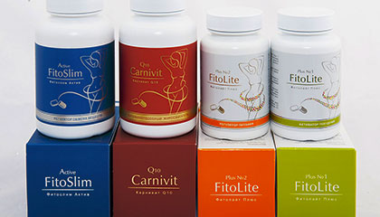
- 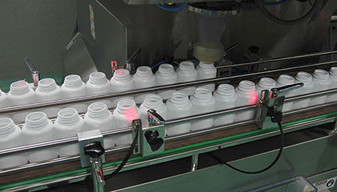
- 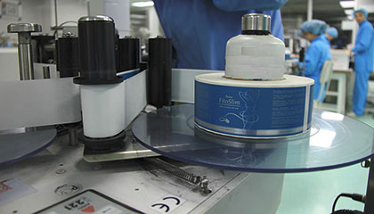
- 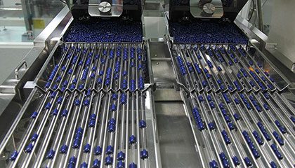
- 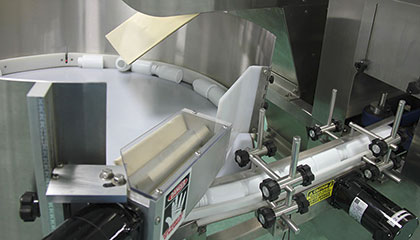
- 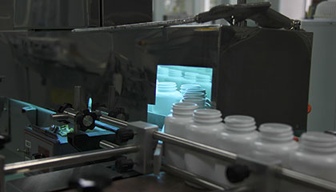
- 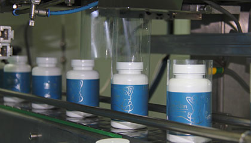
- 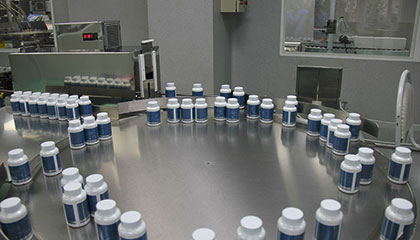
Приобретайте комплекс «АлтаФит» напрямую у производителя!
ОСТЕРЕГАЙТЕСЬ ПОДДЕЛОК!
ОСТЕРЕГАЙТЕСЬ ПОДДЕЛОК!
Мнение эскперта-диетолога
На вопросы отвечает:Гречанников Алексей СергеевичКандидат медицинских наук, врач-диетолог, ведущий специалист по лечению ожирения в Москве
В ходе проведенных клинических испытаний не было выявлено побочных эффектов. Вместе с тем, тонизирующий и возбуждающий эффект некоторых компонентов рецептуры Фитослим Актив лежит в основе рекомендации с осторожностью принимать Фитослим Актив людям с нарушениями сердечной деятельности, на фоне гипертонической болезни, а также на фоне гиперфункции щитовидной железы. Во всех этих случаях рекомендуем предварительно проконсультироваться с врачом.
текст1 текст1 текст1 текст1 текст1 текст1 текст1 текст1 текст1 текст1 текст1 текст1 текст1 текст1 текст1 текст1 текст1 текст1 текст1 текст1 текст1 текст1 текст1 текст1 текст1 текст1 текст1 текст1 текст1 текст1 текст1 текст1 текст1 текст1 текст1 текст1 текст1 текст1 текст1 текст1 текст1 текст1 текст1 текст1 текст1 текст1 текст1 текст1 текст1 текст1 текст1 текст1 текст1 текст1 текст1 текст1 текст1 текст1 текст1 текст1 текст1 текст1 текст1 текст1 текст1 текст1 текст1 текст1 текст1 текст1 текст1 текст1
текст2 текст2 текст2 текст2 текст2 текст2 текст2 текст2 текст2 текст2 текст2 текст2 текст2 текст2 текст2 текст2 текст2 текст2 текст2 текст2 текст2 текст2 текст2 текст2 текст2 текст2 текст2 текст2 текст2 текст2 текст2 текст2 текст2 текст2 текст2 текст2 текст2 текст2 текст2 текст2 текст2 текст2 текст2 текст2 текст2 текст2 текст2 текст2 текст2 текст2 текст2 текст2 текст2 текст2 текст2 текст2 текст2 текст2 текст2 текст2 текст2 текст2 текст2 текст2 текст2 текст2 текст2 текст2 текст2 текст2 текст2
В ходе проведенных клинических испытаний не было выявлено побочных эффектов. Вместе с тем, тонизирующий и возбуждающий эффект некоторых компонентов рецептуры Фитослим Актив лежит в основе рекомендации с осторожностью принимать Фитослим Актив людям с нарушениями сердечной деятельности, на фоне гипертонической болезни, а также на фоне гиперфункции щитовидной железы. Во всех этих случаях рекомендуем предварительно проконсультироваться с врачом.
В ходе проведенных клинических испытаний не было выявлено побочных эффектов. Вместе с тем, тонизирующий и возбуждающий эффект некоторых компонентов рецептуры Фитослим Актив лежит в основе рекомендации с осторожностью принимать Фитослим Актив людям с нарушениями сердечной деятельности, на фоне гипертонической болезни, а также на фоне гиперфункции щитовидной железы. Во всех этих случаях рекомендуем предварительно проконсультироваться с врачом.
В ходе проведенных клинических испытаний не было выявлено побочных эффектов. Вместе с тем, тонизирующий и возбуждающий эффект некоторых компонентов рецептуры Фитослим Актив лежит в основе рекомендации с осторожностью принимать Фитослим Актив людям с нарушениями сердечной деятельности, на фоне гипертонической болезни, а также на фоне гиперфункции щитовидной железы. Во всех этих случаях рекомендуем предварительно проконсультироваться с врачом.
В ходе проведенных клинических испытаний не было выявлено побочных эффектов. Вместе с тем, тонизирующий и возбуждающий эффект некоторых компонентов рецептуры Фитослим Актив лежит в основе рекомендации с осторожностью принимать Фитослим Актив людям с нарушениями сердечной деятельности, на фоне гипертонической болезни, а также на фоне гиперфункции щитовидной железы. Во всех этих случаях рекомендуем предварительно проконсультироваться с врачом.
В ходе проведенных клинических испытаний не было выявлено побочных эффектов. Вместе с тем, тонизирующий и возбуждающий эффект некоторых компонентов рецептуры Фитослим Актив лежит в основе рекомендации с осторожностью принимать Фитослим Актив людям с нарушениями сердечной деятельности, на фоне гипертонической болезни, а также на фоне гиперфункции щитовидной железы. Во всех этих случаях рекомендуем предварительно проконсультироваться с врачом.
В ходе проведенных клинических испытаний не было выявлено побочных эффектов. Вместе с тем, тонизирующий и возбуждающий эффект некоторых компонентов рецептуры Фитослим Актив лежит в основе рекомендации с осторожностью принимать Фитослим Актив людям с нарушениями сердечной деятельности, на фоне гипертонической болезни, а также на фоне гиперфункции щитовидной железы. Во всех этих случаях рекомендуем предварительно проконсультироваться с врачом.
В ходе проведенных клинических испытаний не было выявлено побочных эффектов. Вместе с тем, тонизирующий и возбуждающий эффект некоторых компонентов рецептуры Фитослим Актив лежит в основе рекомендации с осторожностью принимать Фитослим Актив людям с нарушениями сердечной деятельности, на фоне гипертонической болезни, а также на фоне гиперфункции щитовидной железы. Во всех этих случаях рекомендуем предварительно проконсультироваться с врачом.
Как получить комплекс
для быстрого похудения за полцены?
для быстрого похудения за полцены?
Оставьте заявку на сайте
прямо сейчас
прямо сейчас
Наш менеджер свяжется с Вами
в течение 15 минут
в течение 15 минут
Мы бесплатно доставим Ваш заказ
в течение 24 часов
в течение 24 часов
Оплатите заказ
после получения
после получения
До конца акции
-
дней
-
часов
-
минут
-
секунд
+ бесплатная доставка
Сертификаты и лицензии
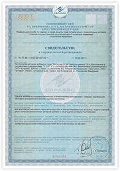
Свидетельство о гос. регистрации
Фитослим Актив
Свидетельство о гос. регистрации
Карнивит Q10
Свидетельство о гос. регистрации
Фитолайт Плюс 1
Свидетельство о гос. регистрации
Фитолайт Плюс 1 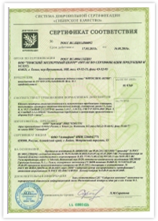
Сертификат соответсвия
Сибирское качество 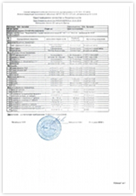
Удостоверение качества
и безопасности 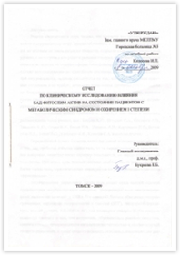
Отчет по клиническим
исследованиям 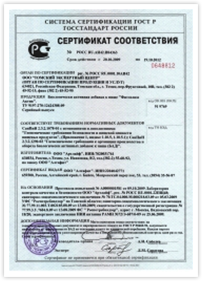
Сертификат соответсвия
ГОССТАНДАРТ РОССИИ
{kind=link}
Свидетельство о гос. регистрации
Фитослим Актив

Свидетельство о гос. регистрации
Карнивит Q10
{kind=link}
Свидетельство о гос. регистрации
Фитолайт Плюс 1

Свидетельство о гос. регистрации
Фитолайт Плюс 1 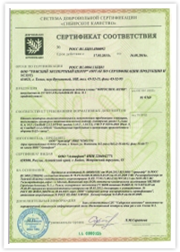
{kind=link}
Сертификат соответсвия
Сибирское качество 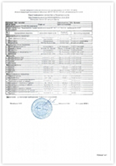
{kind=link}
Удостоверение качества
и безопасности 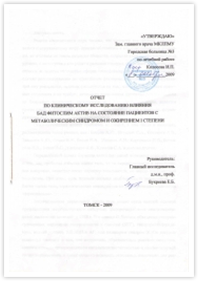
{kind=link}
Отчет по клиническим
исследованиям 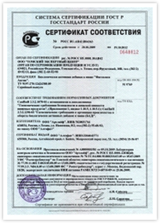
{kind=link}
Сертификат соответсвия
ГОССТАНДАРТ РОССИИ